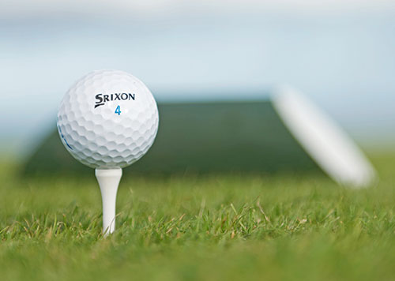
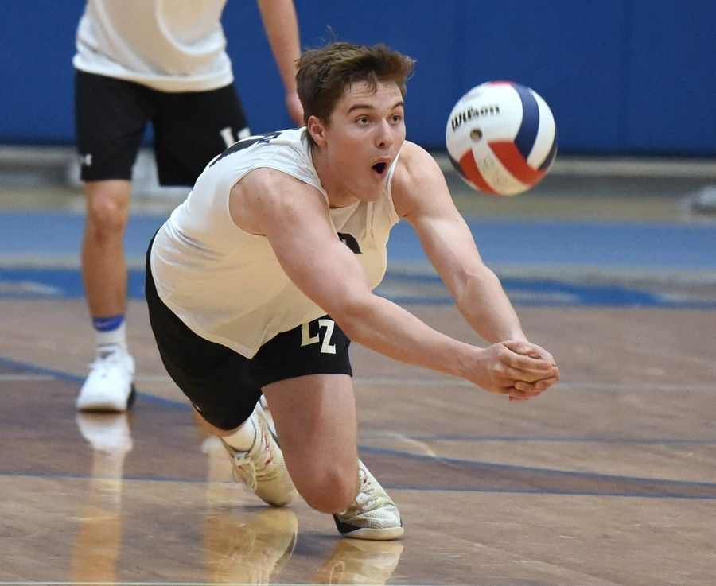

|  |
Golf is a club-and-ball sport in which players use various clubs to hit balls into a series of holes on a course in as few strokes as possible. ... The game at the usual level is played on a course with an arranged progression of 18 holes, though recreational courses can be smaller, often having nine holes. |
|---|---|
 |
Association football, more commonly known as football or soccer, is a team sport played with a spherical ball between two teams of eleven players. It is played by 250 million players in over 200 countries and dependencies, making it the world's most popular sport. |
 |
Cricket is a bat-and-ball game played between two teams of eleven players on a field at the centre of which is a 20-metre (22-yard) pitch with a wicket at each end, each comprising two bails balanced on three stumps. |
|  |
Volleyball is a popular team sport in which two teams of six players are separated by a net. Each team tries to score points by grounding a ball on the other team's court under organized rules. It has been a part of the official program of the Summer Olympic Games since Tokyo 1964. |